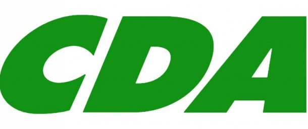

Logo & partijleider CDA
ICT
Het CDA wil omroepen meer ruimte geven om zich op internet te manifesteren. Zonodig moeten mediawettelijke beperkingen hiervoor uit de weg worden genomen.
Ook wilt Het CDA criminaliteit op of via internet bestrijden.Het gaat dan met name om bedreigingen, seksuele intimidatie en haatzaaien. Cybercrime houdt zich niet aan de landgrenzen en vereist daarom een nauwe internationale samenwerking. Er zal, als het aan het CDA ligt, een uitbreiding plaatsvinden van rechercheurs die zich bezighouden met surveillance op het internet. Verder wil het CDA dat het doen van aangifte via internet of per telefoon eenvoudiger wordt.